海の見える山
山頂、登山道から海がきれいに見える山ベスト20です。
真青な美しい海を望める山を中心に選びました。
真青な美しい海を望める山を中心に選びました。
| 順位 | 写真 | 山名 | 訪問日 | コメント |
|---|---|---|---|---|
| 1 |  | 開聞岳 | 2010.12.05 | 海に突き出た山のため、登山道や山頂から広範囲に海を望むことができる。 |
| 2 | 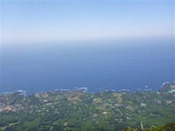 | モッチョム岳 | 2025.05.02 | 山頂からは真下に海岸線を眺められる。その先は真っ青な海だ。 |
| 3 | 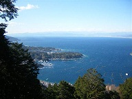 | 発端丈山 | 2008.01.24 | 眼下には真青な駿河湾、その背後には富士山が聳える。 |
| 4 | 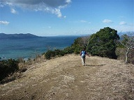 | 沼津アルプス | 2010.02.06 | 縦走路のあちらこちらに展望台があり、美しい海を眺めながら歩くことができる。 |
| 5 | 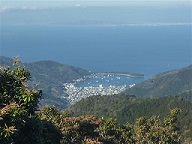 | 達磨山 | 2013.02.10 | 笹原が広がる登山道から駿河湾を望める。眼下の戸田港が美しい。 |
| 6 | 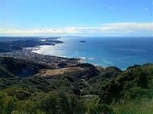 | 鋸山 | 2026.01.25 | 東京湾から太平洋に続く広大な海を見渡すことができる。遠く三浦半島や富士山も見える。 |
| 7 |  | 浜石岳 | 2019.03.24 | 明るく開けた山頂からは真っ青な駿河湾を見下ろすことができる。 |
| 8 | 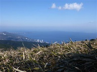 | 玄岳 | 2020.01.13 | 伊豆半島の付け根にあるこの山からは、西に駿河湾、東に太平洋を望むことができる。 |
| 9 | 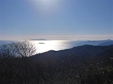 | 城山 | 2018.01.14 | 眼下にはどこまでも広がる海、遠くに伊豆諸島の島々を望むことができる。 |
| 10 | 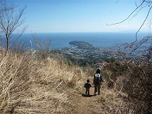 | 幕山 | 2014.03.22 | 幕山とお隣の南郷山からは眼下に海が広がる。海に突き出た真鶴半島が良く目立つ。 |
| 11 |  | 野間岳 | 2010.12.06 | 山頂からは広大な海と野間半島が望める。 |
| 12 | 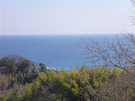 | 曽我丘陵 | 2025.03.09 | 曽我丘陵の南の方は真っ青な相模湾が見下ろせる。そのまま道は海まで続いている。 |
| 13 | 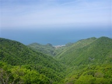 | 弥彦山 | 2024.04.27 | 山頂からは眼下に日本海が広がる。 |
| 14 | 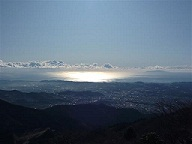 | 塔ノ岳 | 2009.12.19 | 丹沢表尾根からは相模湾が見渡せ、遠くには伊豆大島をはじめとした伊豆諸島が浮かぶ。 |
| 15 | 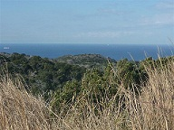 | 房の大山 | 2014.01.13 | 海に突き出た半島の先にある山のため、広範囲に海を望むことができる。 |
| 16 | 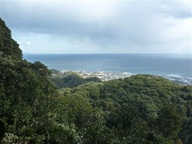 | 高塚山 | 2013.01.26 | 房総半島の東側にある山で、山頂からは太平洋を望むことができる。 |
| 17 | 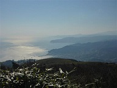 | 岩戸山 | 2015.02.15 | 山頂からは熱海～伊豆方面の海が見下ろせる。 |
| 18 | 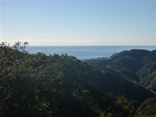 | 烏場山 | 2015.01.18 | 登山道の所々から太平洋を望むことができる。 |
| 19 | 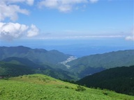 | 猫越岳 | 2021.07.22 | 登山道中の仁科峠展望台からは宇久須の町並と駿河湾が見渡せる。 |
| 20 | 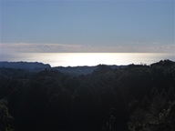 | 初日山 | 2025.01.11 | 初日山は海からは遠いがぐるっと広く海を見渡すことができる。 |